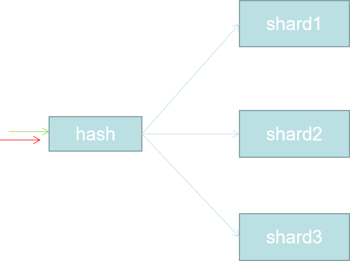
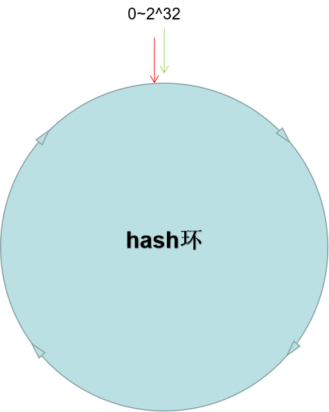
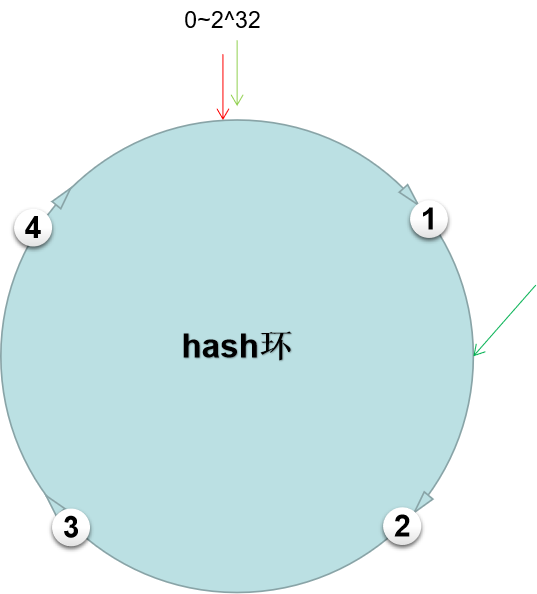
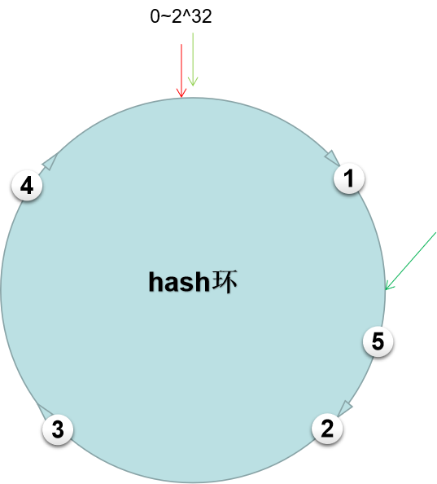
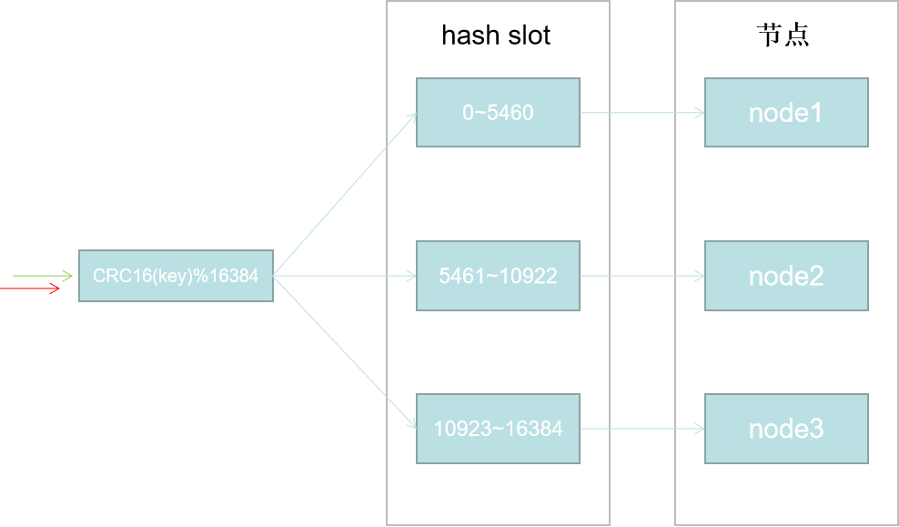

Redis专题地址：https://www.cnblogs.com/hello-shf/category/1615909.html
SpringBoot读源码系列：https://www.cnblogs.com/hello-shf/category/1456313.html
Elasticsearch系列：https://www.cnblogs.com/hello-shf/category/1550315.html
数据结构系列：https://www.cnblogs.com/hello-shf/category/1519192.html
分布式寻址算法是很重要的内容，不了解这些算法，也就不能透彻的了解各种分布式中间件的原理。简单说一下这些高大上的寻址到底是个啥意思，比如在elasticsearch中，采用的是多分片，每个分片上存储的是不一样的数据，是一种并集关系。比如我们通过_id去搜索一条数据，elasticsearch怎么知道这个_id的数据是存在哪个分片上？再比如redis cluster中通过key去查询一条数据，redis集群中怎么知道这个key在哪个节点上？所以这就是寻址算法要解决的问题。
简单介绍三种分布式寻址算法
1 hash算法
2 一致性hash算法
3 hash slothash算法比较适合固定分区或者分布式节点的集群架构，比如elasticsearch中primary shard是固定并且不能改变的。所以采用hash算法是一种不错的选择，当然ES确实也是这么做的。感兴趣的可以看我的另一篇关于ES的博客。https://www.cnblogs.com/hello-shf/p/11543480.html
shard = hash(routing) % number_of_primary_shards （routing默认_id）

一致性hash算法比较适合需要动态扩容的分布式架构以及一些动态负载均衡的分布式中间件和RPC中间件。
redis cluster应用的是hash slot实现的一致性hash寻址。
比如在elasticsearch中，假如有3个primary shard。
shard = hash(_id) % 3;插入一条数据，通过以上公式我们很容易能确认该数据存在了哪个分片上。按照_id查询的是有同样通过以上公式很容易找到该数据位于哪个分片上。
以上算法看上去一切都是那么美好，然鹅。。。
假如primary shard需要扩容意思也就是需要增加一个primary shard怎么办？（仅仅是假如，elasticsearch primary shard是不可变的）hash公式变成下面这样
shard = hash(_id) % 4;是不是就会发生寻址错误？
这就意味着当增加分区需要将原来各个分区上的数据按照shard = hash(_id) % 4的hash取模结果将数据搬运到对应分区上去。假如当有海量数据怎么办？说实话很难办。当发现一个shard宕机，需要快速容灾处理时候，也是一样的问题。
可以说一致性hash就是解决以上动态扩容和缩容问题而诞生的。在分布式架构中如果不支持动态扩容和容灾，分布式=鸡肋，没毛病吧。
其实一致性hash听起来那么牛X，其实也没啥高级的，只不过是一种更加高级的hash取模运算而已。

如上所示，一般的hash环是hash取模运算的node = hash(key) % n;n取2^32，即形成了一个从0~32的hash环。寻址按照顺时针进行查找最近的一个节点。
node = hash(key) % n

有4个节点按照IP取模即node = hash(IP) % n落在了如上图所示的位置，这时一个请求，根据node = hash(key) % n求出该请求落在了如下图所示位置，按照顺时针查找，找到该请求命中节点2。这就是这么一个简单的寻址过程。
扩容：
在原来4个节点的基础上，增加一个节点5，依然根据根据IP取模即node = hash(IP) % n确定节点在hash环上的位置。如下图所示。

可见原来的请求就命中了节点5，所以我们依然需要进行数据的迁移，但是只是部分的，只需要迁移1-2节点之间的数据即可。相对hash取模，一致性hash算法减少了扩容带来的数据迁移量太大的问题。容灾同理。
但是一致性hash算法存在的问题也是很明显的，因为节点很难均匀的落在hash环上。但是有效的减少了动态增删节点带来的数据迁移问题。
hash slot即hash槽。redis cluster采用的正式这种hash槽算法实现的寻址。以redis cluster为例。
在redis cluster中固定的存在16384个hash slot。
hash slot = CRC16（key）%16384；
#CRC16算法可以简单的理解为一种hash算法。详见度娘。
这样我们就能找到key对应的hash slot。其实按照我的理解，hash slot就是在寻址和节点间加了一层映射关系。当节点动态变化，只需要改变hash slot ==> 节点的映射，然后只需要迁移指定slot到新添加的节点即可。既减少了hash寻址带来的数据全量迁移问题，相对一致性hash也使得负载均衡效果更加明显。

如上图，如果我们有三个节点。redis cluster初始化时会自动均分给每个节点16384个slot。
当增加一个节点4，只需要将原来node1~node3节点部分slot上的数据迁移到节点4即可。在redis cluster中数据迁移并不会阻塞主进程。对性能影响是十分有限的。
如有错误的地方还请留言指正。
原创不易，转载请注明原文地址：https://www.cnblogs.com/hello-shf/p/12079986.html
推荐几篇博文供大家参考：
https://www.cnblogs.com/myseries/p/10959050.html
https://www.cnblogs.com/abc-begin/p/8203613.html